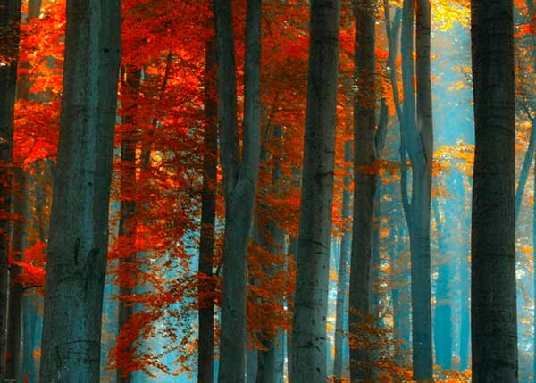
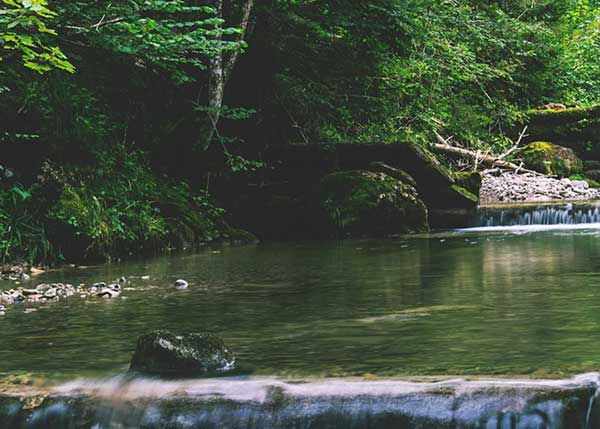
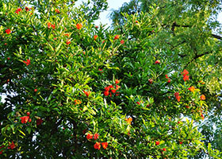
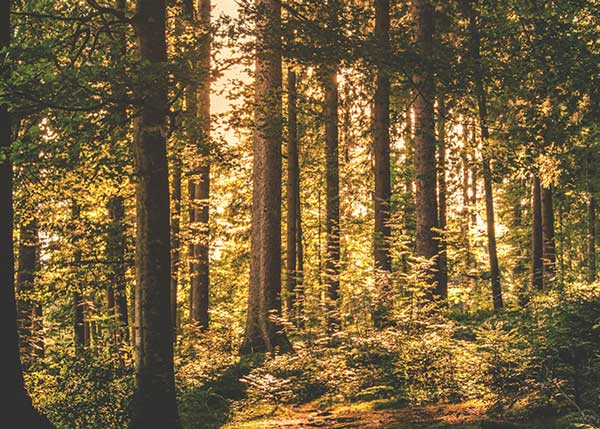
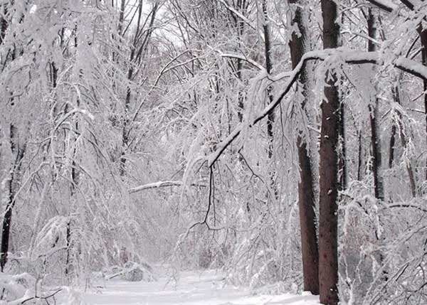
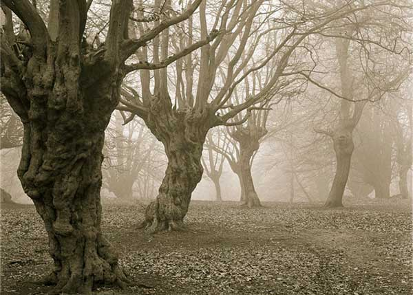

These underground caves serve as a feeding ground for Greed imps. Seeing as these caves are dispersed underground. The Greed imps must aqurire a lot of wealth, to buy them for their raw minerals. These caves are not effected by the weather above ground.
The days are colder and there is less to harvest. The imps use the dead leaves, as fuel for their home's fires. As the trees begin to rest, the imps thank them for their gifts (leaves, wood, fruit, ect.) These days are known as the 'Wilting Season of Change'.
The ice that has blanketed the forest has melted away. This river is located between the Gluttonous and Lust imp territory. The green of the forest is an ideal place to find fresh herbs for medicine.
They harvest half of the fruits, levaing some back for the forset. Fruits are preserved in magical jars that can preserve fruits for 100+ years. This leaves the forest more and more abundent every year.
The woods during summer are hot and lush with trees, it is easy to get lost with all of the new greenery covering the dirt roads. Projects are created by the player to make permanent road that can be travered by imps and not obscured by the forest.
Now that the snow has fallen, the land is asleep (unable to produce crops). The imps can take a break to find wood to warm their house. The Lust imps who own cloth shops have a bomb in sales, selling clothes for travelling imps.
The imps of Pride live in a colorless, monochromal world. Their skys are covered in clouds, giving off shades of gray. The forest's trees resemble hands from the soil, due to the trees feeding from the imp's diety; the Pride imp's diety is the imp of the underworld. No Pride imp has ever seen the blue of the sky or the setting sun.